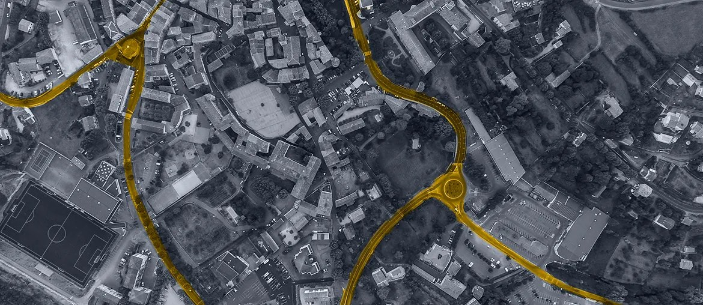

Map the work
Map the Betriebsingenieur workflow from maintenance change to approved record, including offline site steps and compliance handoffs.
We saw BGZ hiring Betriebsingenieure while Robin leads digital work. That points to more site work, more records, and more need for clear systems around safe interim storage.
The hiring signal says BGZ is adding hands around daily operation, change work, and technical documents. That usually means more work moves between sites, engineers, HR, and communication teams. The hard part is keeping each record clear without slowing safe work. If this stays manual, teams spend more time finding proof than improving the process.
Use a dedicated Elinext squad under BGZ's product owner. Start with a six-week pilot focused on operations, records, and public dialogue data.
Team shape: 1 tech lead, 2 full-stack engineers, 1 QA automation engineer, 1 UX analyst, with DevOps and security support.
Map the Betriebsingenieur workflow from maintenance change to approved record, including offline site steps and compliance handoffs.
Build a small integration layer that joins job, asset, document, and forum signals without replacing BGZ's current systems.
Create role-based views for engineering, HR, and communication teams, with clear status and audit-ready notes.
Ship weekly demos, add automated tests, and leave BGZ with code, docs, and a secure release path.
Elinext is a full-cycle software development company since 1997, with about 700 in-house specialists and no freelancers. For a safety-led company like BGZ, our ISO 9001 and ISO 27001 work is important. We have served Siemens, Volkswagen, Broadcom, TRUMPF, and TUI, so our teams understand large and careful organizations. We can work as a dedicated squad under your PM or product owner. That fits the pilot above: steady delivery, clear QA, and documents BGZ can keep using.

Elinext built a Java, Spring, React, and PostgreSQL planning tool for a German infrastructure company.
Read the case studyElinext built web modules for candidates, vacancies, and admin setup to support active hiring work.
Read the case study